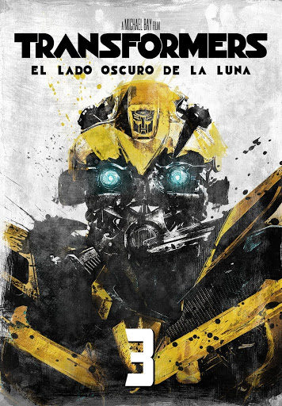

La carrera espacial secreta: La historia revela que la misión del Apolo 11 en 1969 tuvo un propósito oculto por el gobierno de Estados Unidos: investigar una misteriosa nave espacial de origen Cybertroniano llamada El Arca, la cual se estrelló en el lado oculto de la Luna. El despertar de Sentinel Prime: Los Autobots, liderados por Optimus Prime, descubren la nave y rescatan a Sentinel Prime (el predecesor de Optimus), trayéndolo de vuelta a la Tierra junto con unos dispositivos conocidos como Pilares. La traición: Se descubre un pacto secreto entre Sentinel Prime y los Decepticons (comandados por Megatron y el despiadado Shockwave), cuyo plan es traer el planeta Cybertron a la órbita de la Tierra y esclavizar a la humanidad para reconstruir su mundo. Sam Witwicky: Una vez más, el joven Sam Witwicky (interpretado por Shia LaBeouf) se ve envuelto en el conflicto global para ayudar a sus amigos mecánicos y evitar la destrucción de la Tierra.
REGRESAR